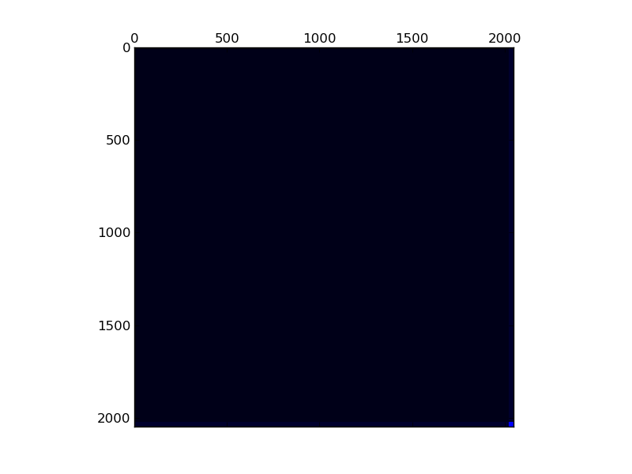

Matrix: dense

Program arguments: ../build/test_spmv_sim ../fpga16-benchmark/fpga16/dense.mtx File: ../fpga16-benchmark/fpga16/dense.mtx Sorting took: took 0.163728 seconds. Param MatrixPath ../fpga16-benchmark/fpga16/dense.mtx Running on DFE Result Simple Total cycles=133120,133120, Result Simple Padding cycles=32,32, Result Simple Reduction cycles=1024,1024, Config ArchitectureId 1 Result Simple Input width =16, Result Simple Pipes =2, Result Simple Iterations=1, Result Simple Took (ms)=6.56154, Result Simple Est (ms)=0.0013312, Result Simple Gflops (est)=6.30154, Result Simple Gflops (actual)=0.00127845, Result Simple BWidth (est)=35.7628, Test passed! All tests passed!
Name, Order, Nonzeros, Unique Values, Sparsity, MC(2), MC(5), MC(8), MC(10) dense 2050 4194304 4194293 99.80497 0.00000 0.00001 0.00006 0.00025 0.00196